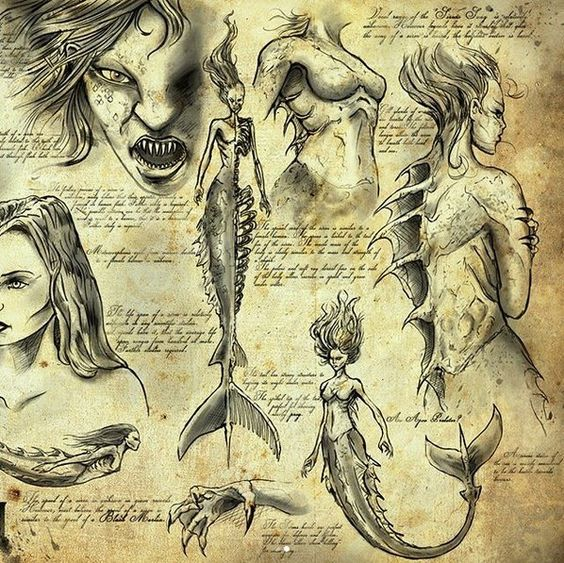

Sereias

Das incríveis criaturas que habitam o universo de fantasia do reino das águas, as sereias são certamente uma das mais conhecidas. Normalmente descritas como lindas mulheres com cabeça e torso humanos e cauda de peixe, poucas pessoas sabem que na origem grega da mitologia das sereias, elas eram monstros com corpo de pássaro e cabeça humana.
A única beleza que conservaram foi a linda voz, que usavam para atormentar e enganar os marinheiros, que enfeitiçados com a voz das sereias, se atiravam ao mar e se afogavam.
Outra versão considera que Afrodite (a deusa da sensualidade, do amor e da beleza) tirou o encanto dessas mulheres por inveja. Acredita-se também que a divindade grega condenou as sereias porque elas desprezavam as artes do amor.
